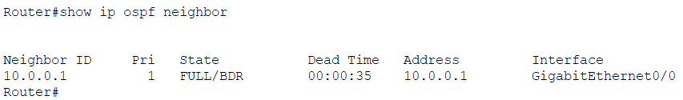

Open Shortest Path First (OSPF) is a robust, link-state routing protocol operating at Layer 3. It is widely used in large enterprise networks to dynamically find the fastest and most efficient path for data packets to reach their destination.
Static routing becomes impossible to manage as networks grow. Older dynamic protocols (like RIP) use "Hop Count" to choose paths, which can mistakenly route traffic over very slow links just because they are shorter. OSPF solves this by using the Dijkstra Algorithm to calculate paths based on link Cost (Bandwidth), ensuring traffic always takes the fastest route.
OSPF routers exchange "Link-State Advertisements" (LSAs) to build a complete topological map of the entire network. To keep the network efficient and reduce CPU load, OSPF divides the network into Areas. All areas must connect to a central backbone called Area 0.
To enable OSPF, you need to assign a Process ID (e.g., 1). Then, you advertise the directly connected networks using a Wildcard Mask (the inverse of a subnet mask) and assign them to a specific area (usually Area 0 for basic setups).
